第 2 章 导热引论#
本章解决：傅里叶定律到底在说什么——它的矢量形式、方向约定、适用条件与局限；材料的热物性（导热系数、热扩散率）量级如何、随温度怎么变、微纳尺度下要怎么修正；热扩散方程（导热微分方程）如何从微元控制体能量守恒一步步推出来，柱坐标、球坐标形式长什么样、能做哪些简化；以及解方程前必须配齐的三类边界条件与初始条件怎么写。这一章是第 3～5 章所有导热分析（平壁、肋片、非稳态）的地基。
2.0 本章导图#
2.1 导热速率方程#
导热的本质：由于温度梯度（temperature gradient）存在，介质内依靠原子、分子的随机运动输运能量。第 1 章已给出傅里叶定律的一维形式，这一节回答三个问题：它从哪来、对不同几何长什么样、比例系数（导热系数）由什么决定。
2.1.1 从实验到一维表达式#
傅里叶定律是现象学定律（phenomenological law）：从大量实验现象归纳而来，不是从第一性原理推导的。原书用图 2.1 的稳态实验说明归纳过程：一根已知材料的圆柱棒，侧面绝热，两端面维持不同温度 \(T_1 > T_2\)，温差驱动导热沿 \(+x\) 方向进行；热流量 \(q_x\) 可测，考察它对温差 \(\Delta T = T_1 - T_2\)、棒长 \(\Delta x\)、横截面积 \(A\) 的依赖。
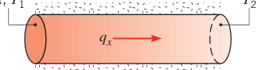
控制变量实验的结论：
- 固定 \(\Delta T\)、\(\Delta x\)，改变 \(A\)：\(q_x\) 与 \(A\) 成正比；
- 固定 \(\Delta T\)、\(A\)，改变 \(\Delta x\)：\(q_x\) 与 \(\Delta x\) 成反比；
- 固定 \(A\)、\(\Delta x\)，改变 \(\Delta T\)：\(q_x\) 与 \(\Delta T\) 成正比。
三者合起来就是 \(q_x = kA\,\Delta T/\Delta x\)。换材料（金属换塑料）比例关系仍成立，但同样的 \(A\)、\(\Delta x\)、\(\Delta T\) 下塑料的热流量更小——这说明比例系数是材料物性，把它定义为导热系数 \(k\)（单位 W/(m·K)），再令 \(\Delta x \to 0\) 取极限，得到热流量：
除以截面积 \(A\)，得到热流密度（heat flux，单位 W/m²）：
负号的含义只有一句话：热永远流向温度降低的方向。图 2.2 里壁内 \(dT/dx < 0\)，所以 \(q_x'' > 0\)，热流沿 \(+x\) 方向。
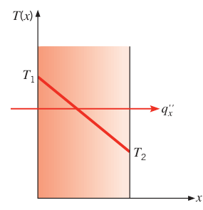
2.1.2 矢量形式与等温面#
式 (2.2) 暗示热流密度是有方向的量：它的方向垂直于所穿过的截面。更一般的说法：热流方向总是垂直于等温面（isothermal surface，温度处处相同的曲面）。图 2.2 的平壁里等温面就是垂直于 \(x\) 轴的平面。
既然热流密度是矢量，傅里叶定律的普遍形式就是矢量方程。记 \(\nabla\) 为三维梯度算子、\(T(x,y,z)\) 为标量温度场：
它默认了热流密度矢量垂直于等温面。若 \(n\) 是等温面的法线方向、\(\hat{n}\) 是该方向的单位矢量，傅里叶定律也可写成法向分量式：
图 2.3 画的是二维情形：热流 \(\vec{q}''\) 沿等温线（isotherm）法线方向 \(n\)，由沿 \(n\) 的温度梯度维持，并可分解为 \(x\)、\(y\) 两个分量。
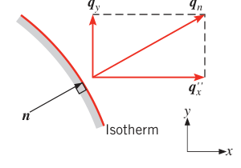
在直角坐标系里，把矢量式按分量展开：
每个分量式都把"穿过某面的热流密度"和"垂直于该面的温度梯度"联系起来。
注意式 (2.3) 里还藏了一条假设：介质是各向同性的（isotropic），即导热系数与坐标方向无关，\(k_x = k_y = k_z = k\)。各向异性材料（如纤维复合板、石墨层间与层内）不满足这条，遇到时要另行处理。
原书把傅里叶定律的要点总结为四条，背下来：
- 它不能从第一性原理导出，是基于实验证据的普遍化归纳；
- 它定义了一个重要物性——导热系数；
- 它是矢量表达式：热流密度垂直于等温面、指向温度降低的方向；
- 它对固、液、气所有物态都成立。
拓展：等温面与热流线的几何关系
"热流垂直于等温面"在二维里最好记：把温度场画成一组等温线，热流线（沿 \(\vec{q}''\) 的轨迹）处处与等温线正交，构成一组正交曲线族。这跟静电场中电场线垂直于等势面是同一个数学结构——温度对应电势，热流对应电场强度。所以二维稳态导热的解常可借共形映射或与静电场类比来定性判断热流走向，第 3 章看到形状因子方法时会有体会。
2.2 物质的热物性#
要用傅里叶定律，必须先知道导热系数。它是一种输运物性（transport property）：刻画扩散过程搬运能量的速率，其值取决于物质的原子、分子结构，也就是物质所处的状态。本节按固体、流体、绝热系统三类展开，先给量级，再给机理，最后给微纳尺度修正。
2.2.1 导热系数#
由式 (2.6) 反解，可把 \(x\) 方向的导热系数定义为：
\(y\)、\(z\) 方向类似。对各向同性材料 \(k_x = k_y = k_z = k\)。给定温度梯度时，导热系数越大，热流密度越大。总体规律：固体 > 液体 > 气体，如图 2.4 所示，固体的导热系数可以比气体高出四个数量级以上。这主要源于两种物态分子间距的巨大差异。
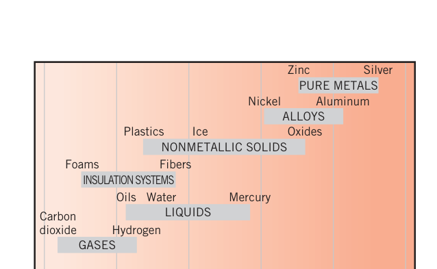
读图 2.4 记几个锚点：纯金属 10～1000 W/(m·K) 量级（银最高）；合金低一档；非金属固体约 0.1～100（氧化物、冰偏上段，塑料偏下段）；液体约 0.1～10（汞可到 10）；绝热系统约 0.01～0.1；气体约 0.01～0.3（氢气最高）。附录 A 的表 A.1（金属固体）、表 A.2 与表 A.3（非金属固体）给出具体数值。
固态：电子与声子两种载流子#
现代材料观把固体看作自由电子（free electrons）加上束缚在周期性排列的晶格（lattice）中的原子。于是固体里搬热量的有两套机制：自由电子的迁移，和晶格振动波。晶格振动的能量量子按粒子图像看待时称为声子（phonon）。纯金属里电子贡献占主导；非导体和半导体里声子贡献占主导。
动能理论（kinetic theory）给出统一表达式：
其中 \(C\) 是单位体积载流子的比热，\(\bar{c}\) 是载流子平均速度，\(\lambda_{\text{mfp}}\) 是平均自由程（mean free path）——载流子在两次碰撞之间平均走过的距离。具体到两类材料：
- 导电材料（金属）：\(C = C_e\) 为电子比热（单位体积），\(\bar{c}\) 为电子平均速度，\(\lambda_{\text{mfp}} = \lambda_e\) 为电子平均自由程（电子撞上材料缺陷或声子之前的平均距离）；
- 非导电固体：\(C = C_{ph}\) 为声子比热，\(\bar{c}\) 为平均声速，\(\lambda_{\text{mfp}} = \lambda_{ph}\) 为声子平均自由程（同样由缺陷碰撞或其他声子碰撞决定）。
无论哪种载流子，平均自由程越长，导热系数越大。当电子和声子都参与搬热时：
一阶近似下 \(k_e\) 与电阻率 \(\rho_e\) 成反比。纯金属 \(\rho_e\) 小，\(k_e \gg k_{ph}\)；合金 \(\rho_e\) 大得多，\(k_{ph}\) 的贡献不再可忽略。非金属固体的 \(k\) 主要由 \(k_{ph}\) 决定，原子与晶格相互作用频率越低 \(k_{ph}\) 越大。晶格排列的规整度对 \(k_{ph}\) 影响很大：石英这类结晶（有序）材料的导热系数高于玻璃这类非晶材料。金刚石、氧化铍这类结晶非金属的 \(k_{ph}\) 可以非常大，甚至超过铝这样的良导体——所以"导电就好导热"在非金属里会翻车。
图 2.5 给出代表性金属与非金属固体的导热系数随温度的变化曲线，查值用表 A.1～A.3。
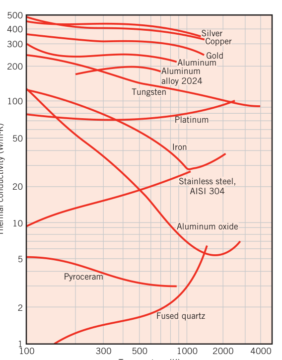
拓展：为什么金属的 k 随温度升高而下降，气体却上升
用式 (2.7) 拆开看最清楚。纯金属靠电子搬热：温度升高时晶格振动加剧，电子被声子散射得更频繁，\(\lambda_e\) 变短，\(k_e\) 下降——铜、银、铝的曲线在 100～1000 K 段都是下坡。气体正好相反：温度升高分子平均速度 \(\bar{c}\) 增大，而 \(\lambda_{\text{mfp}}\) 在定压下几乎不变，所以 k 上升。两条机理对照着记，图 2.5 和图 2.8 的走势就不会背反。
拓展：维德曼–弗兰兹定律
"\(k_e\) 反比于电阻率"的定量版本是维德曼–弗兰兹定律（Wiedemann–Franz law）：\(k_e/(\sigma T) = L_0 \approx 2.44\times10^{-8}\ \text{W}\,\Omega/(\text{K}^2)\)，其中 \(\sigma = 1/\rho_e\) 是电导率，\(L_0\) 称洛伦兹数。它把"电的良导体也是热的良导体"变成可算的公式，也是室温附近用电阻测量推算金属导热系数的依据。合金偏离此式更明显（电子自由程被溶质原子大幅截断），这正是图 2.5 中铝合金 2024 远低于纯铝的原因。
固态的微纳尺度效应#
式 (2.7)、(2.8) 和附录 A 的表值描述的是体材料（bulk）行为，适用于材料特征尺寸远大于载流子平均自由程的场合。微电子等领域里特征尺寸只有微米、纳米量级，\(k\) 会被修改。
图 2.6 画了两块同材料薄膜，厚度 \(L_1 > L_2\)。物理边界会散射能量载体并改变其传播方向：\(L/\lambda_{\text{mfp}} \gg 1\) 时（图 2.6a）边界对平均自由程的影响可以忽略，体材料行为照旧；薄膜变薄后（图 2.6b），边界缩短了载流子的平均净程，而且沿薄方向（\(x\) 方向）运动的载流子比沿 \(y\) 方向的受边界影响更重——所以薄膜呈现 \(k_x < k_y < k\)（\(k\) 为体材料导热系数）。
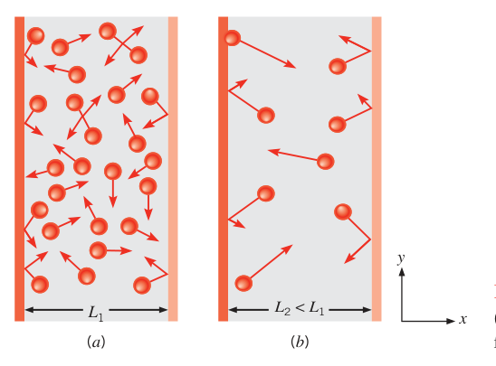
当 \(L/\lambda_{\text{mfp}}\) 在 1 附近时，\(k_x\)、\(k_y\) 可用下式估算（20% 精度内）：
原书由式 (2.9a,b) 得出：当 \(L/\lambda_{\text{mfp}} > 7\)（对 \(k_x\)）与 \(L/\lambda_{\text{mfp}} > 4.5\)（对 \(k_y\)）时，\(k_x\)、\(k_y\) 与体值的偏差在"约 5%"以内。
原书笔误：\(k_y\) 的 5% 判据与式 (2.9b) 对不上
把 \(L/\lambda_{\text{mfp}} = 4.5\) 代入式 (2.9b)：\(k_y/k = 1 - 2/(3\times4.5) \approx 0.85\)，偏差是 15% 而不是 5%。若要求 \(k_y\) 偏差小于 5%，需 \(2\lambda_{\text{mfp}}/(3L) < 0.05\)，即 \(L/\lambda_{\text{mfp}} > 13.3\)。结论本身（\(k_y\) 比 \(k_x\) 更早偏离体值）不受影响，但 4.5 这个阈值配 5% 的说法是笔误。
\(L/\lambda_{\text{mfp}} \ll 1\) 时没有任何普适公式可预测导热系数。还有两点要记住：固体里 \(\lambda_{\text{mfp}}\) 随温度升高而变短；除了物理边界，化学掺杂原子和晶界（把均匀材料分割成一个个小晶粒的界面）也会散射能量载体。纳米结构材料（nanostructured materials）化学成分与常规材料完全相同，只是加工成极小晶粒——晶界密度暴增，散射和反射增强，导热系数被压低。
表 2.1 列出几种材料在 300 K 的平均自由程与临界膜厚（低于它就必须考虑微尺度效应）。
| 材料 | \(\lambda_{\text{mfp}}\)（nm） | \(L_{crit,x}\)（nm） | \(L_{crit,y}\)（nm） |
|---|---|---|---|
| 氧化铝（Aluminum oxide） | 5.08 | 36 | 22 |
| 金刚石 IIa 型（Diamond, IIa） | 315 | 2200 | 1400 |
| 砷化镓（Gallium arsenide） | 23 | 160 | 100 |
| 金（Gold） | 31 | 220 | 140 |
| 硅（Silicon） | 43 | 290 | 180 |
| 二氧化硅（Silicon dioxide） | 0.6 | 4 | 3 |
| 钇稳定氧化锆（Yttria-stabilized zirconia） | 25 | 170 | 110 |
原书脚注给出一个无量纲组合：\(\lambda_{\text{mfp}}/L\) 称为克努森数（Knudsen number）。克努森数大（即 \(L/\lambda_{\text{mfp}}\) 小）预示微纳尺度效应可能显著。
拓展：克努森数的分区
克努森数 \(Kn = \lambda_{\text{mfp}}/L\) 借自稀薄气体动力学，按大小分四区：\(Kn < 0.01\) 连续介质区（傅里叶定律与热扩散方程照用）；\(0.01 < Kn < 0.1\) 滑流区（边界上出现温度跳跃，需修正边界条件）；\(0.1 < Kn < 10\) 过渡区（本节的式 2.9a,b 这类半经验修正在此勉强可用）；\(Kn > 10\) 自由分子区（载流子几乎只与边界碰撞，\(\lambda_{\text{mfp}}\) 由几何尺寸直接决定，没有普适公式）。表 2.1 里金刚石的 \(\lambda_{\text{mfp}} = 315\) nm 意味着微米级金刚石膜就已经进入过渡区，这就是它临界膜厚高达 2200 nm 的原因。
图 2.7 是体纳米晶钇稳定氧化锆（yttria-stabilized zirconia，一种广泛用于高温燃烧装置隔热层的陶瓷）的实测导热系数。它靠声子导热，300 K 时 \(\lambda_{\text{mfp}} = 25\) nm。当晶粒尺寸降到 25 nm 以下（单位体积内引入更多晶界），导热系数显著下降。注意外推警告：高温下 \(\lambda_{\text{mfp}}\) 变短（1525 K 时约 4 nm），且晶粒会合并长大，\(L/\lambda_{\text{mfp}}\) 随之变大，图 2.7 的结果不能外推到高温——高温下纳米效应反而变弱。
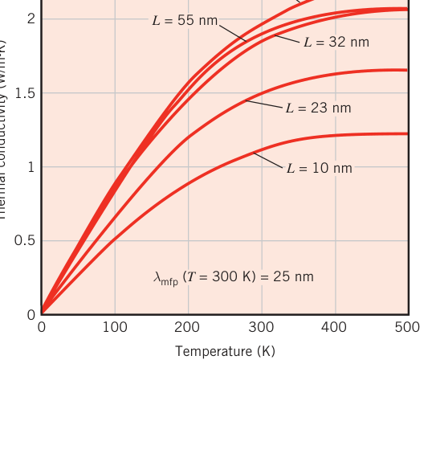
流态：气体与液体#
流态包括液体和气体。分子间距大、分子运动更随机，所以流体搬热效率低于固体，导热系数一般更小。
气体的行为可用气体动理论解释清楚。导热系数正比于气体密度、分子平均速度 \(\bar{c}\) 与平均自由程 \(\lambda_{\text{mfp}}\)（分子两次碰撞间平均走过的距离）：
其中 \(c_v\) 是单位体积定容比热。对理想气体：
\(k_B = 1.381\times10^{-23}\) J/K 是玻尔兹曼常数，\(d\) 是气体分子直径，\(p\) 是压强。压强高、温度低时分子排得密，\(\lambda_{\text{mfp}}\) 就小；分子越大越容易碰撞，\(\lambda_{\text{mfp}}\) 越短——极限情况下分子无穷小则永不碰撞，\(\lambda_{\text{mfp}}\) 无穷大。分子平均速度由动理论确定，最终式 (2.10) 可写成：
其中 \(\gamma = c_p/c_v\) 是比热比，\(\mathcal{N} = 6.022\times10^{23}\ \text{mol}^{-1}\) 是阿伏伽德罗常数。式 (2.12) 可用于估算气体的导热系数，后续研究还建立了更精确的模型。
最重要的一条工程结论：大体量气体的导热系数与压强无关，只在接近完全真空等极端条件下才不成立。表 A.4 的气体物性虽按大气压（或对应温度的饱和压强）给出，可在宽得多的压强范围内使用。
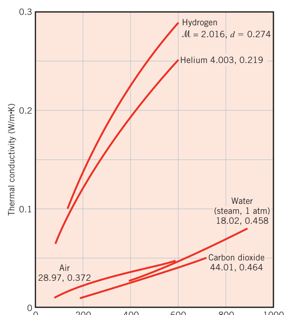
液体的分子图像难以描述，导热机理至今没有完善理论。经验规律：非金属液体的导热系数一般随温度升高而下降，水、甘油、机油是明显的例外（先升后降或明显上升，见图 2.9）；导热系数对压强不敏感（近临界点除外）；分子量越大，导热系数一般越小。液体物性通常按饱和态随温度列表，见表 A.5、A.6。
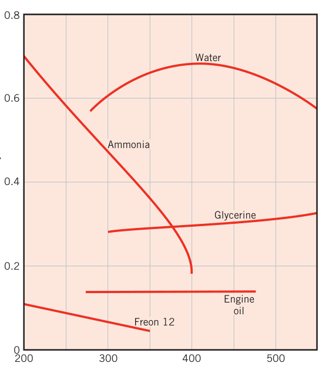
液态金属是特例：导热系数远大于非金属液体，常用于核电站等高热流密度场合，数据见表 A.7。
流体的微纳尺度：与薄膜同理，流体被约束在小尺寸空间中时分子平均自由程受限，跨薄流体层的导热受影响。此外，纳米流体（nanofluid）——在基液中悬浮纳米级固体颗粒（典型如水中分散球形 \(\text{Al}_2\text{O}_3\) 或 CuO 颗粒）——借固体的高导热系数抬升基液的整体导热能力，例 2.2 给出定量算法。
绝热系统#
绝热材料（thermal insulation）由低导热系数材料组合而成，实现比组分更低的系统导热系数。传统纤维、粉末、片状绝热材料把固体细分散在空气隙中，其有效导热系数（effective thermal conductivity）取决于固体材料的导热系数与表面辐射特性、空气隙的性质与体积分数；系统的堆积密度（bulk density，固体质量/总体积）与填装方式强相关。
若固体部分焊接或熔融成刚性骨架、封闭彼此隔开的空隙，称为蜂窝状绝热（cellular insulation），泡沫塑料、泡沫玻璃是典型。反射型绝热（reflective insulation）由多层高反射率平行薄板/箔组成，把辐射能反射回源，箔间距限制空气流动，高性能产品中还把间隙抽真空。所有类型的绝热材料，抽掉空隙中的空气都会降低有效导热系数。
穿过度热系统的传热可能是多种模式的叠加：固体骨架的导热、空隙中空气的导热或对流、固体表面间的辐射换热。有效导热系数把这一锅全炖在一起，数值见表 A.3。
绝热材料同样有微纳尺度故事。图 2.10 是掺碳二氧化硅气凝胶（约 5% 体积固体 + 95% 体积空气，孔隙尺寸 \(L \approx 20\) nm）的有效导热系数随压强的变化。300 K 大气压下空气的 \(\lambda_{\text{mfp}} \approx 80\) nm，远大于孔隙——孔隙壁限制了空气分子的运动，所以抽真空能进一步把有效导热系数压到常规材料的极小值以下（对照图 2.4 的量级）。
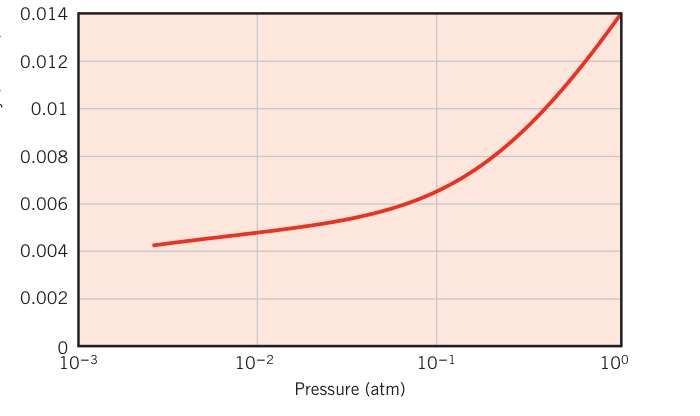
拓展：为什么气凝胶抽真空降得下来，大空间气体却与压强无关
关键在"边界约束"与式 (2.11) 的适用条件。大空间里 \(\lambda_{\text{mfp}} \propto 1/p\)，但分子数密度也 \(\propto 1/p\)，两者相消，k 与压强无关。气凝胶孔隙（20 nm）小于常压空气自由程（80 nm），分子撞壁比撞分子更频繁，\(\lambda_{\text{mfp}}\) 被"钉"在孔隙尺度上不再随压强减小而增长；此时继续抽真空，孔隙里分子数减少而自由程不再变长，k 随压强单调下降。这也是多层真空绝热（杜瓦瓶、深冷储罐）的设计原理。
2.2.2 其他相关物性#
导热分析还要用一组统称热物性（thermophysical properties）的量，分两类：
- 输运物性（transport properties）：扩散速率系数，如导热系数 \(k\)（传热）、运动黏度 \(\nu\)（动量输运）；
- 热力学物性（thermodynamic properties）：与平衡态相关，如密度 \(\rho\)、比热 \(c_p\)。
乘积 \(\rho c_p\)（单位 J/(m³·K)）称体积热容（volumetric heat capacity），度量材料储热能力。密度大的物质比热通常小，所以许多固、液体都是储热好手，\(\rho c_p \approx 1\ \text{MJ/(m}^3\text{K)}\) 量级；气体密度极小，\(\rho c_p \approx 1\ \text{kJ/(m}^3\text{K)}\)，几乎不储热。
传热分析中，导热系数与热容之比是重要物性，称热扩散率（thermal diffusivity），单位 m²/s：
它度量材料"导热能力相对于储热能力"的比值。\(\alpha\) 大的材料对热环境变化响应快，\(\alpha\) 小的材料反应迟钝、达到新平衡要更久。
物性数据的准确性直接决定工程计算的可靠性——原书强调：随手引用来源不明、未经验证的手册数据是忌讳；推荐使用普渡大学热物性研究中心（TPRC）编制的物性数据汇编。
【例 2.1】热扩散率是非稳态导热的控制性输运物性。从附录 A 选取合适的 \(k\)、\(\rho\)、\(c_p\)，计算下列材料在指定温度的 \(\alpha\)：纯铝 300 K 与 700 K；碳化硅 1000 K；石蜡 300 K。
已知（Known）：热扩散率定义 \(\alpha = k/(\rho c_p)\)。
求（Find）：所选材料与温度下的 \(\alpha\) 数值。
物性（Properties）：
- 表 A.1，纯铝 300 K：\(k = 237\ \text{W/(m·K)}\)，\(\rho = 2702\ \text{kg/m}^3\)，\(c_p = 903\ \text{J/(kg·K)}\)；
- 表 A.1，纯铝 700 K：\(k = 225\ \text{W/(m·K)}\)（线性内插），\(c_p = 1090\ \text{J/(kg·K)}\)（线性内插），\(\rho = 2702\ \text{kg/m}^3\)（取 300 K 值）；
- 表 A.2，碳化硅 1000 K：\(k = 87\ \text{W/(m·K)}\)，\(\rho = 3160\ \text{kg/m}^3\)，\(c_p = 1195\ \text{J/(kg·K)}\)；
- 表 A.3，石蜡 300 K：\(k = 0.24\ \text{W/(m·K)}\)，\(\rho = 900\ \text{kg/m}^3\)，\(c_p = 2890\ \text{J/(kg·K)}\)。
分析（Analysis）：逐一代入 \(\alpha = k/(\rho c_p)\)。
纯铝 300 K：
纯铝 700 K：
碳化硅 1000 K：
石蜡 300 K：
点评（Comments）：
- 注意铝和碳化硅物性的温度依赖。例如碳化硅 \(\alpha(1000\,\text{K}) \approx 0.1\,\alpha(300\,\text{K})\)——它的物性随温度变化非常强烈。
- \(\alpha\) 的物理意义：衡量热输运（\(k\)）相对储能（\(\rho c_p\)）的能力。金属固体的 \(\alpha\) 普遍高，非金属（如石蜡）低。
- 物性值的线性内插对工程计算完全够用。
- 用低温（300 K）密度套用到高温忽略了热膨胀，工程上同样可接受。
- IHT 软件内置了固液气物性库（工具栏 Properties 按钮）。
【例 2.2】含均匀分散、互不接触球形纳米颗粒的纳米流体，其体导热系数可近似为：
其中 \(\varphi\) 是颗粒体积分数，\(k_{bf}\)、\(k_p\)、\(k_{nf}\) 分别是基液、颗粒、纳米流体的导热系数。动力黏度近似为 \(\mu_{nf} = \mu_{bf}(1 + 2.5\varphi)\)。求水 + \(\text{Al}_2\text{O}_3\) 纳米颗粒混合物在 \(T = 300\) K、\(\varphi = 0.05\) 时的 \(k_{nf}\)、\(\rho_{nf}\)、\(c_{p,nf}\)、\(\mu_{nf}\)、\(\alpha_{nf}\)。颗粒物性：\(k_p = 36.0\ \text{W/(m·K)}\)，\(\rho_p = 3970\ \text{kg/m}^3\)，\(c_{p,p} = 0.765\ \text{kJ/(kg·K)}\)。
已知（Known）：球形纳米颗粒纳米流体的体导热系数与黏度表达式；颗粒物性。
求（Find）：纳米流体的导热系数、密度、比热、动力黏度与热扩散率。
示意图（Schematic）：
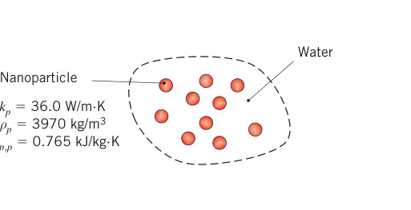
假设（Assumptions）：
- 物性为常数；
- 密度与比热不受纳米尺度现象影响；
- 等温条件。
物性（Properties）：表 A.6（300 K），水：\(k_{bf} = 0.613\ \text{W/(m·K)}\)，\(\rho_{bf} = 997\ \text{kg/m}^3\)，\(c_{p,bf} = 4.179\ \text{kJ/(kg·K)}\)，\(\mu_{bf} = 855\times10^{-6}\ \text{N·s/m}^2\)。
分析（Analysis）：先算导热系数。分子 \(= 36.0 + 2\times0.613 + 2\times0.05\times(36.0-0.613) = 36.0 + 1.226 + 3.539 = 40.765\ \text{W/(m·K)}\)；分母 \(= 36.0 + 1.226 - 1.769 = 35.457\ \text{W/(m·K)}\)。
密度与比热不能用简单加权平均糊弄，要用守恒原理。取总体积 \(V\) 的控制体，质量守恒 \(\rho_{nf}V = \rho_{bf}V(1-\varphi) + \rho_p V\varphi\)，除以 \(V\)：
能量守恒（同温 \(T\) 下）：\(\rho_{nf}V c_{p,nf} T = \rho_{bf}V(1-\varphi)c_{p,bf}T + \rho_p V\varphi c_{p,p}T\)，除以 \(V\)、\(T\) 与 \(\rho_{nf}\)：
黏度按题给关系式：
热扩散率：
点评（Comments）：
- 纳米流体与水的物性比：\(k_{nf}/k_{bf} = 1.150\)，\(\rho_{nf}/\rho_{bf} = 1.149\)，\(c_{p,nf}/c_{p,bf} = 0.858\)，\(\mu_{nf}/\mu_{bf} = 1.130\)，\(\alpha_{nf}/\alpha_{bf} = 1.166\)。导热系数和热扩散率提高有利于强化传热，但黏度上升、比热下降会在第 6～9 章的对流场景里拖后腿，综合效果可能反而变差。
- 该导热系数（与黏度）表达式只适用于互不接触球形颗粒的稀悬浮液。颗粒若团聚成长链，会形成导热通路，实际导热系数更高——所以题给表达式是球形颗粒增强的下限。团聚对应的最大各向同性导热系数、非球形颗粒稀悬浮液，都有专门的表达式可用；这些表达式也适用于颗粒相弥散在基体中的纳米复合材料（第 3 章展开）。
- \(\rho_{nf}\)、\(c_{p,nf}\) 由质量守恒与能量守恒导出，因此与颗粒如何分散无关。
2.3 热扩散方程#
导热分析的核心目标是求出温度场（temperature field）\(T(x,y,z,t)\)——温度在介质中如何随位置（和时间）分布。一旦温度场已知，任意点的热流密度用傅里叶定律一算便得；对固体，温度场还能进一步给出热应力、变形、隔热层厚度优化等信息。
求温度场的路径是第 1.3.1 节的能量守恒方法论：定义微元控制体（differential control volume），识别相关能量过程，代入速率方程，得到一个微分方程——它的解（配上下节的边界条件）就是温度分布。
2.3.1 直角坐标系：一般形式#
考虑均质介质，内部无宏观运动（无对流），温度分布 \(T(x,y,z)\)。取微元控制体 \(\mathrm{d}x\,\mathrm{d}y\,\mathrm{d}z\)（图 2.11），在瞬时对它列能量守恒。无运动就无机械能变化、无对系统做功，只需考虑热能：
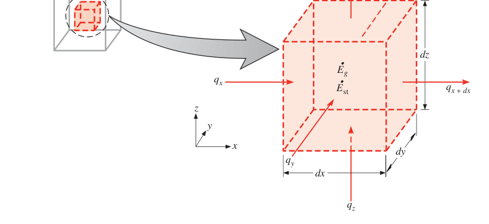
第一步，写出各控制面上的导热热流量。 \(x\)、\(y\)、\(z\) 位置处的热流量记 \(q_x\)、\(q_y\)、\(q_z\)；对面（\(x+\mathrm{d}x\) 等）上的热流量用泰勒展开、略去高阶项：
用大白话读式 (2.13a)：\(x+\mathrm{d}x\) 处的热流量，等于 \(x\) 处的值加上"沿 x 每单位长度变化量 × dx"。
第二步，写出能量生成与储存。 介质内可能有能量生成过程（化学、电、核反应），用单位体积热生成速率 \(\dot{q}\)（W/m³）表示：
控制体内物质储存的热能也可能变化（不发生相变时，潜热不影响）：
\(\rho c_p\,\partial T/\partial t\) 是单位体积显热能的时间变化率。
拓展：生成项与储存项——两个最容易混的项
\(\dot{E}_g\) 与 \(\dot{E}_{st}\) 是完全不同的物理过程。\(\dot{E}_g\) 是能量形式转换：化学能、电能、核能转成热能的速率。\(\dot{q} > 0\) 是源（其他能量换成热，如通电电阻发热、核燃料裂变），\(\dot{q} < 0\) 是汇（热能被消耗，如吸热反应、熔化潜热——不发生相变的假设正是为排除后者）。\(\dot{E}_{st}\) 则是介质自己存的显热在涨落，不涉及能量形式转换。判断口诀：问"热从哪来"答 \(\dot{q}\)；问"温度为什么在变"答 \(\partial T/\partial t\)。
第三步，列能量守恒。 按速率形式，能量守恒的普遍要求是式 (1.12c)：
导热热流量即流入 \(\dot{E}_{in}\) 与流出 \(\dot{E}_{out}\)，代入式 (2.14)、(2.15)：
再代入式 (2.13)：
第四步，代入速率方程。 各向同性介质中，各面热流量由傅里叶定律给出（热流密度分量乘以对应控制面面积）：
把式 (2.18) 代入式 (2.17)、约去 \(\mathrm{d}x\,\mathrm{d}y\,\mathrm{d}z\)，得到直角坐标系下热扩散方程（heat diffusion equation）的一般形式，常简称热方程（heat equation）：
式 (2.19) 表面复杂，说的就是能量守恒。每一项都有明确的物理身份，例如 \(x\) 方向那一项乘上 \(\mathrm{d}x\)：
正是 \(x\) 方向净导入控制体的热流密度。\(y\)、\(z\) 方向同理。整句话翻译成人话：介质中任意一点，单位体积净导入的导热速率加上体积热生成速率，必等于该体积内热能储存的变化速率。
2.3.2 四级简化链#
很多问题用不到一般式。原书给出一条常用的简化链：
第一级：常物性（k 为常数）。\(k\) 提出导数，两边除以 \(\rho c_p\)，用 \(\alpha = k/\rho c_p\)：
第二级：稳态（\(\partial T/\partial t = 0\)）。储存项消失（稳态下不可能有能量储存变化）：
第三级：一维 + 无内热源（例如只沿 \(x\) 方向传热、\(\dot{q} = 0\)）：
式 (2.23) 的重要推论：稳态、一维、无内热源时，热流密度沿传热方向是常数（\(\mathrm{d}q_x''/\mathrm{d}x = 0\)）——第 3 章平壁导热全部建立在这句话上。
拓展：数学上的命名
常物性、无内热源的稳态热方程 \(\nabla^2 T = 0\) 就是拉普拉斯方程（Laplace equation），有内热源则是泊松方程（Poisson equation）。这两个名字在数值传热和偏微分方程教材里到处都是，知道对应关系，看到"求解拉普拉斯方程的温度场"就不会陌生。非稳态无热源时叫扩散方程，是抛物型偏微分方程的原型。
2.3.3 柱坐标与球坐标#
几何是圆柱或球时，直接用相应坐标系的方程省去换元的麻烦。两种坐标系的微元控制体见图 2.12、2.13。
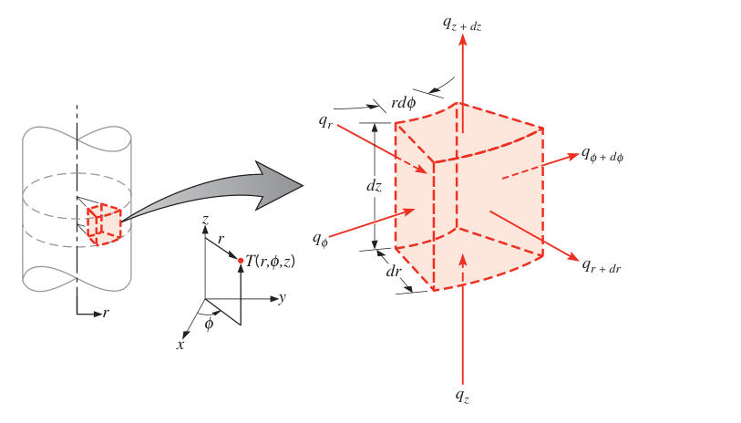
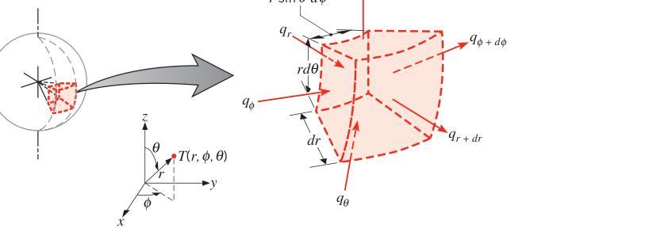
柱坐标（cylindrical coordinates）。梯度算子换成柱坐标形式后，热流密度矢量与傅里叶定律为：
分别是径向、周向、轴向的热流密度分量。对图 2.12 的控制体做能量平衡，得柱坐标热扩散方程：
球坐标（spherical coordinates）。热流密度矢量为：
分别是径向、极向、方位向的分量。对图 2.13 的控制体做能量平衡，得球坐标热扩散方程：
原书建议亲手把式 (2.26) 或 (2.29) 推一遍（对应习题 2.35、2.36），练对微元控制体列守恒的手感。还有一个容易踩的坑：傅里叶定律里的温度梯度单位必须是 K/m，角坐标的梯度要换成对弧长的微分。例如柱坐标周向热流密度是 \(q_\phi'' = -k(1/r)(\partial T/\partial\phi)\)，而不是 \(-k(\partial T/\partial\phi)\)。
【例 2.3】某时刻厚 1 m 的墙内温度分布为 \(T(x) = a + bx + cx^2\)，\(T\) 单位 ℃，\(x\) 单位 m，\(a = 900\) ℃，\(b = -300\) ℃/m，\(c = -50\) ℃/\(\text{m}^2\)。墙内有均匀热生成 \(\dot{q} = 1000\ \text{W/m}^3\)，墙面积 \(10\ \text{m}^2\)，物性 \(\rho = 1600\ \text{kg/m}^3\)，\(k = 40\ \text{W/(m·K)}\)，\(c_p = 4\ \text{kJ/(kg·K)}\)。求：(1) 进入墙（\(x=0\)）与离开墙（\(x=1\) m）的热流量；(2) 墙内能量储存的变化速率；(3) \(x = 0\)、0.25、0.5 m 处温度随时间的变化速率。
已知（Known）：一维含均匀内热源的墙在某瞬时 \(t\) 的温度分布 \(T(x)\)。
求（Find）：
- 流入热流量 \(q_{in}\)（\(x=0\)）与流出热流量 \(q_{out}\)（\(x=1\) m）；
- 墙内储能变化速率 \(\dot{E}_{st}\)；
- \(x = 0\)、0.25、0.5 m 处的 \(\partial T/\partial t\)。
示意图（Schematic）：
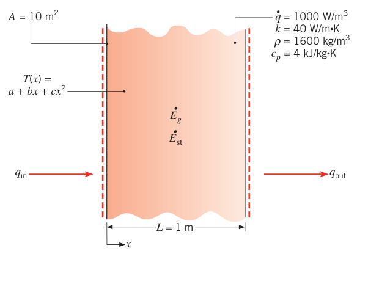
假设（Assumptions）：
- 沿 \(x\) 方向一维导热；
- 各向同性、常物性；
- 均匀内热源 \(\dot{q}\)（W/m³）。
分析（Analysis）：
第 1 问。 温度分布已知，任意点的热流量由傅里叶定律（式 2.1）直接算。梯度为 \(\partial T/\partial x = b + 2cx\)。
同理出口：
第 2 问。 对整面墙用总体能量平衡（式 1.12c），其中 \(\dot{E}_g = \dot{q} A L\)：
负号表示墙内储存的热能在减少，墙正整体降温。
第 3 问。 任意点的温度变化速率由热方程（式 2.21）给出，改写成：
由题给分布：
二阶导与位置无关，所以 \(\partial T/\partial t\) 也与位置无关：
点评（Comments）：
- 结果表明墙内每一点的温度都在随时间下降。
- 只要知道温度分布，即便非稳态、即便有内热源，傅里叶定律照样能算导热热流量——"先解场再算流"的次序永远成立。
微尺度效应的适用提醒#
本节的热扩散方程对绝大多数工程场景可靠，但它建立在傅里叶定律上，而傅里叶定律没有考虑能量载体传播热信息的有限速度。当关注的热事件时间尺度 \(\Delta t\) 足够长，即
时，有限传播速度的后果可以忽略。此外，需要显式考虑边界散射的问题（例如图 2.6b 薄膜内的温度分布）也不适用这些热扩散方程，要改用专门的微纳尺度传热分析方法。
2.4 边界与初始条件#
热方程是空间二阶方程：每个空间坐标需要两个边界条件；它对时间是一阶的：只需一个初始条件（initial condition）。原书表 2.2 汇总了传热中最常见的三类边界条件（以 \(x=0\) 表面、热流沿 \(+x\) 为例）。
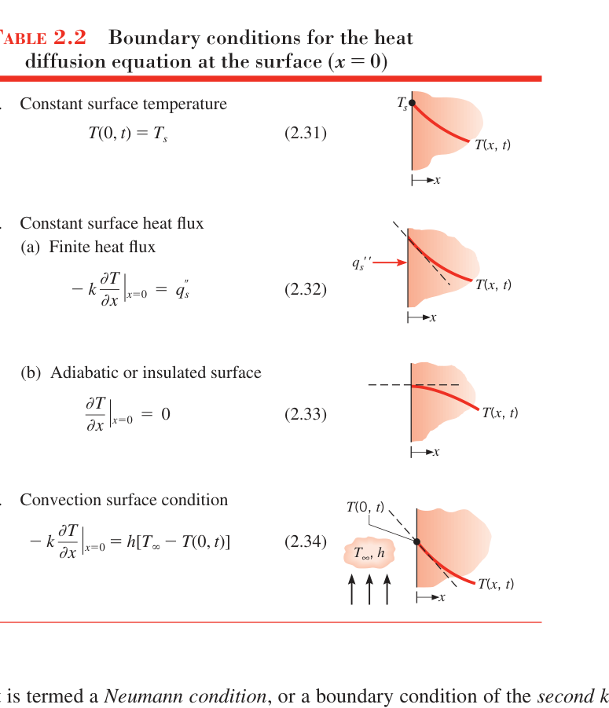
按数学与物理两条线整理如下：
| 类型 | 数学表达 | 名称与物理对应 |
|---|---|---|
| 1 | \(T(0,t) = T_s\) （式 2.31） | 第一类边界条件（Dirichlet condition）：表面维持定温。典型：表面接触正在熔化的固体或沸腾的液体——表面有换热，但温度钉在相变温度上 |
| 2a | \(-k\,\dfrac{\partial T}{\partial x}\bigg\vert_{x=0} = q_s''\) （式 2.32） | 第二类边界条件（Neumann condition）：表面给定热流密度 \(q_s''\)。典型：表面贴薄膜电加热器 |
| 2b | \(\dfrac{\partial T}{\partial x}\bigg\vert_{x=0} = 0\) （式 2.33） | 2a 的特例：完全绝热面（adiabatic surface），无热流即梯度为零 |
| 3 | \(-k\,\dfrac{\partial T}{\partial x}\bigg\vert_{x=0} = h\,[\,T_\infty - T(0,t)\,]\) （式 2.34） | 第三类边界条件：表面对流换热（加热或冷却），由表面能量平衡导出（1.3.1 节） |
三类条件一眼识别法：给温度是第一类，给热流是第二类，给流体和换热系数是第三类。第三类把固体侧梯度与对流侧温差用傅里叶定律缝在一起，\(h\to\infty\) 时退化为第一类（\(T(0,t)\to T_\infty\)），\(h\to 0\) 时退化为第二类的绝热情形。
【例 2.4】一根矩形截面铜棒，宽 \(w\) 远大于厚 \(L\)，下表面与温度为 \(T_o\) 的热沉（heat sink）接触，棒内温度近似处处等于 \(T_o\)。突然通过电流加热，同时温度 \(T_\infty\) 的气流掠过棒的上表面，下表面继续维持 \(T_o\)。写出确定棒内温度随位置、时间变化所需的微分方程与边界、初始条件。
已知（Known）：铜棒初始与热沉处于热平衡，通电后突然被加热。
求（Find）：确定棒内温度随位置和时间分布所需的微分方程、边界条件与初始条件。
示意图（Schematic）：
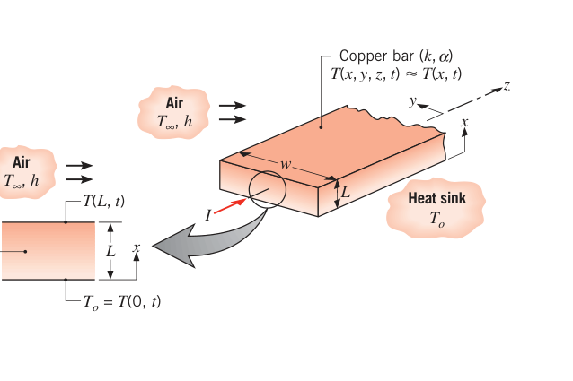
假设（Assumptions）：
- 棒细长且 \(w \gg L\)，端部与侧面效应可忽略，棒内传热以 \(x\) 方向一维为主；
- 体积热生成均匀，为 \(\dot{q}\)；
- 物性为常数。
分析（Analysis）：温度分布由热方程（式 2.19）支配。按本题一维、常物性条件，简化为：
温度是位置与时间的函数 \(T(x,t)\)。该方程对 \(x\) 二阶、对 \(t\) 一阶，所以需要 \(x\) 方向两个边界条件、时间一个初始条件。
下表面温度恒为 \(T_o\)（不随时间变）——对应表 2.2 第 1 类：
上表面与气流对流换热——对应表 2.2 第 3 类：
初始条件来自"通电前棒整体处于均匀温度 \(T_o\)"：
若 \(T_o\)、\(T_\infty\)、\(\dot{q}\)、\(h\) 已知，式 (1)～(4) 可解出通电后的时变温度分布 \(T(x,t)\)。
点评（Comments）：
- \(x=0\) 处的热沉可以靠冰浴实现，也可以贴冷板（cold plate）：在高导热固体（通常是铜）里铣出冷却液通道，循环水冷，使板面近乎均温。
- 上表面温度 \(T(L,t)\) 随时间变化，是未知量，解出 \(T(x,t)\) 后才能得到。
- 凭物理直觉可徒手画出瞬态过程中若干时刻的温度分布。设 \(T_\infty > T_o\)，且电流足够大使棒温最终超过 \(T_\infty\)，则初始条件（\(t\le 0\)）、稳态（\(t\to\infty\)）与两个中间时刻的分布如下：
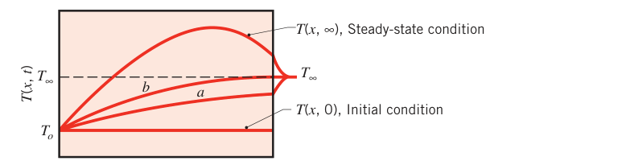
注意这些分布如何满足初始与边界条件。（图中曲线 b 有个特点：它在某点斜率为零——该点梯度为零、无热流，想想它在物理上对应什么时刻。）
- 热流密度随时间的变化同样可以凭直觉推断。在 \(q_x''\text{–}t\) 坐标上：
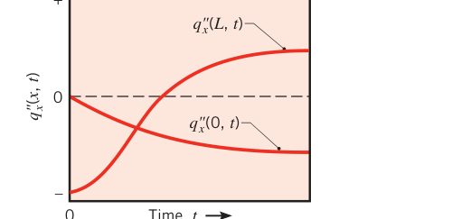
自证这些变化与点评 3 的温度分布一致。\(t\to\infty\) 时，\(q_x''(0)\) 与 \(q_x''(L)\) 同体积热生成速率是什么关系？（答案藏在稳态能量守恒里：两者之差必等于 \(\dot{q}L\)。）
2.5 小结：这一章给你什么#
这一章篇幅短，分量重。傅里叶定律是导热分析的基石，必须吃透；热物性要有量级感——纯金属、合金、非金属固体、液体、气体的 k 逐级下降，微纳尺度下还要修正；热方程由微元控制体的能量守恒推出，解出温度场后再回到傅里叶定律算热流；三类边界条件的数学形式与物理对应必须张口就来。第 3～5 章（平壁与径向系统、肋片、非稳态导热）全部站在本章之上，值得反复回看。
坑与陷阱#
8 个容易踩的坑
- 负号丢不得，也别再加一次：\(q'' = -k\nabla T\) 的负号表示热流逆温度梯度。用式 (2.6) 分量式代数值时，梯度本身带符号（例 2.3 中 \(b = -300\) ℃/m），"负负得正"就是热流为正——对同一个面重复加负号是新手最常见的自伤。
- \(\dot{q}\) 是每立方米的，\(\dot{E}_g\) 是总瓦数：式 (2.14) 差一个体积。例 2.3 的总生成 \(= \dot{q}AL = 1000\times10\times1 = 10\) kW，直接把 1000 W/m³ 当 W 用，能量平衡立马差三个数量级。
- 生成项与储存项不是一回事：\(\dot{q}\) 是化学/电/核能转热（能量形式转换），\(\rho c_p\,\partial T/\partial t\) 是介质存的显热在变（温度变化的原因）。方程里谁都不缺谁：稳态判断"有没有热源"，瞬态判断"温度会不会变"。
- 角坐标的温度梯度要换算成弧长：柱坐标周向是 \(-k(1/r)\,\partial T/\partial\phi\)，球坐标方位向是 \(-k/(r\sin\theta)\,\partial T/\partial\phi\)。漏掉 \(1/r\)（或 \(1/(r\sin\theta)\)），单位就不是 W/m²，数值全错。
- 薄膜别照抄体材料 k：\(L/\lambda_{\text{mfp}}\) 小于临界值（表 2.1 给了 \(L_{crit}\)）时必须用式 (2.9a,b) 修正，且记住 \(k_x < k_y < k\)——薄的方向偏差更大。查表 2.1：金刚石 \(\lambda_{\text{mfp}} = 315\) nm，微米级薄膜就已经是"薄膜"。
- "气体 k 与压强无关"有适用范围：只对大体量气体成立。高真空（分子碰撞让位于撞壁）、纳米孔隙（气凝胶，孔隙 20 nm < 空气自由程 80 nm）场景下，k 随压强显著变化——图 2.10 的纵坐标比常压气体低两个数量级。
- 简化有前提，逐级来：\(k\) 提出导数的前提是常物性（式 2.21）；"热流密度沿程不变"要同时满足稳态、一维、无内热源三个条件（式 2.23），缺一个 \(q''\) 就沿程变化（例 2.3 有内热源，\(q_{in} = 120\) kW、\(q_{out} = 160\) kW，就是不等）。
- 物性取值温度要对齐：例 2.1 里 700 K 的 \(k\)、\(c_p\) 是线性内插值，密度却直接沿用 300 K 值（忽略热膨胀，工程可接受）；碳化硅 \(\alpha(1000\,\text{K})\) 只有 300 K 的约十分之一——拿一个温度的物性去算另一个温度的问题，误差可能大到失去意义。
速览#
- 傅里叶定律：\(\vec{q}'' = -k\nabla T\)（式 2.3）。现象学归纳而来，不是第一性原理推导；热流垂直于等温面、指向温度降低方向；对固液气全部适用。
- 一维常用式：\(q_x = -kA\,\mathrm{d}T/\mathrm{d}x\)（式 2.1），\(q_x'' = -k\,\mathrm{d}T/\mathrm{d}x\)（式 2.2）。负号来自"热往冷处流"。
- 固体导热两种载流子：自由电子与声子，\(k = k_e + k_{ph}\)（式 2.8）。纯金属靠电子，非金属/半导体靠声子；金刚石、氧化铍的声子导热可超铝。
- 载流子通用公式 \(k = \frac{1}{3}C\bar{c}\lambda_{\text{mfp}}\)（式 2.7）：比热 × 速度 × 平均自由程。想提高 k 就让自由程变长（晶体规整、低温），想降低 k 就制造散射（合金化、晶界细化）。
- 气体：\(k\) 随温度升高而增大、与压强无关（大体量）；\(\lambda_{\text{mfp}} = k_BT/(\sqrt{2}\pi d^2 p)\)。液体：多数随温度下降（水、甘油、机油例外）。量级：固体 > 液体 > 气体，最大跨四个数量级。
- 热扩散率 \(\alpha = k/(\rho c_p)\)（m²/s）：导热能力与储热能力之比；\(\alpha\) 大响应快。体积热容 \(\rho c_p\)：固液约 1 MJ/(m³·K)，气体约 1 kJ/(m³·K)。
- 热扩散方程（式 2.19）= 微元控制体能量守恒 + 傅里叶定律：净导入 + 生成 = 储存。常物性式 (2.21)、稳态式 (2.22)、一维无热源式 (2.23)（此时热流密度沿程不变）。
- 柱、球坐标方程 (2.26)、(2.29) 直接背形式；角坐标梯度必须除以 \(r\)（或 \(r\sin\theta\)）。
- 边界条件三类：定温 \(T(0,t)=T_s\)、定热流 \(-k\,\partial T/\partial x = q_s''\)（绝热是其零热流特例）、对流 \(-k\,\partial T/\partial x = h(T_\infty - T_s)\)；每个空间坐标两个边界条件，时间一个初始条件。
- 适用红线：热事件时间尺度满足 \(\lambda_{\text{mfp}}/(\bar{c}\Delta t) \ll 1\)、且不需显式处理边界散射（式 2.30），热扩散方程才可用。
术语速查#
| 英文 | 中文 | 一句话 |
|---|---|---|
| Fourier's law | 傅里叶定律 | 热流密度正比于温度梯度的负值，导热分析基石 |
| heat flux | 热流密度 | 单位面积热流量，W/m²，矢量，垂直等温面 |
| temperature gradient | 温度梯度 | 温度随位置的变化率，K/m，指向升温方向 |
| isothermal surface | 等温面 | 温度处处相同的曲面，热流与其正交 |
| thermal conductivity | 导热系数（热导率） | 物性，正比"同样梯度下搬运热量的本事"，W/(m·K) |
| isotropic | 各向同性 | 物性与方向无关，\(k_x = k_y = k_z = k\) |
| thermophysical properties | 热物性 | 输运物性（k、ν）+ 热力学物性（ρ、cp）的总称 |
| free electron | 自由电子 | 金属中主导搬热的载流子 |
| lattice | 晶格 | 固体中原子的周期性排列 |
| phonon | 声子 | 晶格振动能量的量子，非金属主导载流子 |
| mean free path | 平均自由程 | 载流子两次碰撞间的平均距离 |
| Knudsen number | 克努森数 | \(\lambda_{\text{mfp}}/L\)，大值预示微尺度效应显著 |
| nanostructured material | 纳米结构材料 | 化学成分同常规、晶粒极细，晶界散射压低 k |
| nanofluid | 纳米流体 | 基液悬浮纳米颗粒，抬升导热系数 |
| effective thermal conductivity | 有效导热系数 | 绝热系统多模式传热的综合表现 |
| volumetric heat capacity | 体积热容 | \(\rho c_p\)，储热能力，J/(m³·K) |
| thermal diffusivity | 热扩散率（导温系数） | \(\alpha = k/\rho c_p\)，导热/储热之比，m²/s |
| kinematic viscosity | 运动黏度 | 动量输运的输运物性 \(\nu\)，m²/s |
| heat diffusion equation | 热扩散方程（导热微分方程） | 微元体能量守恒的微分形式，解出温度场 |
| volumetric thermal energy generation | 体积热生成 | \(\dot{q}\)，单位体积热生成速率，W/m³ |
| energy storage term | 储能项 | \(\rho c_p\,\partial T/\partial t\)，显热能变化速率 |
| Dirichlet condition | 第一类边界条件 | 给定壁温，如接触熔融/沸腾介质 |
| Neumann condition | 第二类边界条件 | 给定壁面热流，绝热为零热流特例 |
| convection surface condition | 第三类边界条件 | 表面对流换热，由表面能量平衡导出 |
| initial condition | 初始条件 | 时间一阶方程所需的起始温度分布 |